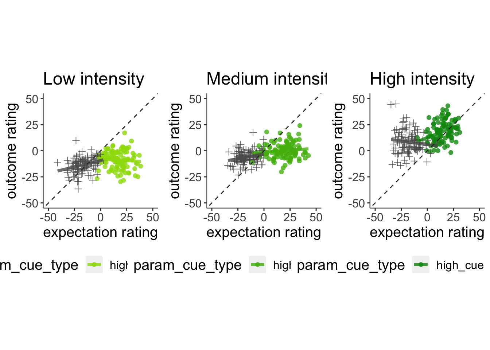
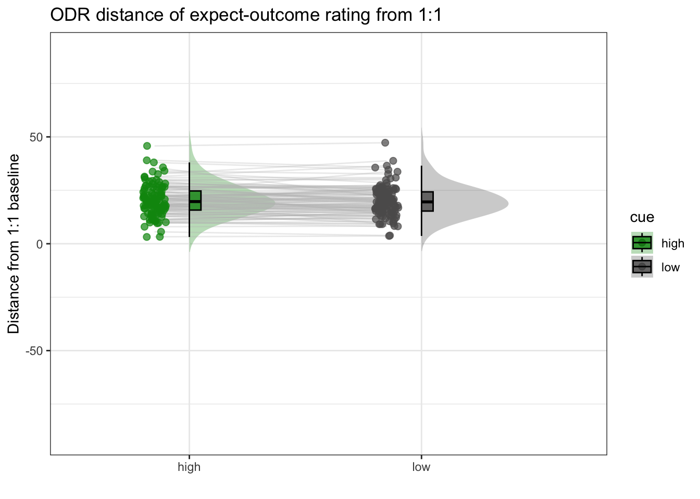
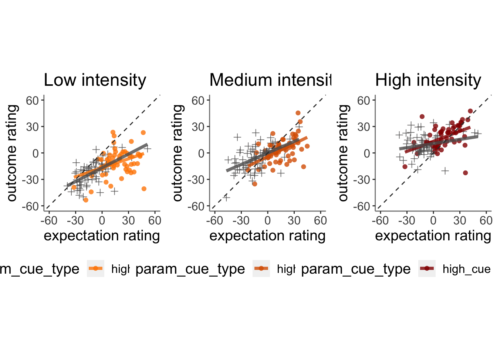
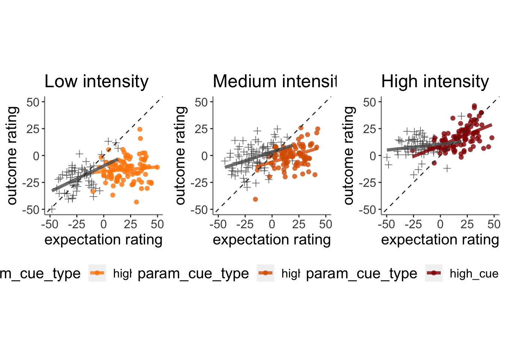

Chapter 8 [ beh ] outcome_demean ~ cue * stim * expectrating * n-1outcomerating
What is the purpose of this notebook?
Here, I model the outcome ratings as a function of cue, stimulus intensity, expectation ratings, N-1 outcome rating.
* As opposed to notebook 14, I demean the ratings within participants
* In other words, calculate the average within subjects and subtract ratings
* Main model: lmer(outcome_rating ~ cue * stim * expectation rating + N-1 outcomerating)
* Main question: What constitutes a reported outcome rating?
* Sub questions:
- If there is a linear relationship between expectation rating and outcome rating, does this differ as a function of cue?
- How does a N-1 outcome rating affect current expectation ratings?
- Later, is this effect different across tasks or are they similar?
- IV: stim (high / med / low) cue (high / low) expectation rating (continuous) N-1 outcome rating (continuous)
- DV: outcome rating
Some thoughts, TODOs
- Standardized coefficients
- Slope difference? Intercept difference? ( cue and expectation rating)
- Correct for the range (within participant) hypothesis:
- Larger expectation leads to prediction error
- Individual differences in ratings
- Outcome experience, based on behavioral experience What are the brain maps associated with each component.
load data and combine participant data
## event02_expect_RT event04_actual_RT event02_expect_angle event04_actual_angle
## Min. :0.6504 Min. :0.0168 Min. : 0.00 Min. : 0.00
## 1st Qu.:1.6341 1st Qu.:1.9197 1st Qu.: 30.18 1st Qu.: 38.80
## Median :2.0517 Median :2.3510 Median : 58.56 Median : 60.77
## Mean :2.1397 Mean :2.4005 Mean : 62.94 Mean : 66.33
## 3rd Qu.:2.5678 3rd Qu.:2.8512 3rd Qu.: 90.00 3rd Qu.: 88.38
## Max. :3.9912 Max. :3.9930 Max. :180.00 Max. :180.00
## NA's :661 NA's :638 NA's :661 NA's :6418.1 linear model 0508
Code
# model.factorize_demean = lmer(demean_outcome~ CUE_high_gt_low*stim_factor*demean_expect +EXPECT_cmc+ lag.demean_outcome+(1|src_subject_id), data = pvc)
# summary(model.factorize_demean)
model.factorize_demean = lmer(demean_outcome~ CUE_high_gt_low*stim_con_linear*demean_expect +
CUE_high_gt_low*stim_con_quad*demean_expect +
EXPECT_cmc + (1|src_subject_id), data = pvc)## fixed-effect model matrix is rank deficient so dropping 1 column / coefficient## boundary (singular) fit: see help('isSingular')Code
summary(model.factorize_demean)## Linear mixed model fit by REML. t-tests use Satterthwaite's method [
## lmerModLmerTest]
## Formula: demean_outcome ~ CUE_high_gt_low * stim_con_linear * demean_expect +
## CUE_high_gt_low * stim_con_quad * demean_expect + EXPECT_cmc +
## (1 | src_subject_id)
## Data: pvc
##
## REML criterion at convergence: 43246.4
##
## Scaled residuals:
## Min 1Q Median 3Q Max
## -5.3122 -0.5823 -0.0037 0.5936 5.1434
##
## Random effects:
## Groups Name Variance Std.Dev.
## src_subject_id (Intercept) 0.0 0.00
## Residual 370.8 19.26
## Number of obs: 4939, groups: src_subject_id, 110
##
## Fixed effects:
## Estimate Std. Error df
## (Intercept) -7.897e-01 3.461e-01 4.927e+03
## CUE_high_gt_low -3.686e+00 6.922e-01 4.927e+03
## stim_con_linear 3.010e+01 8.554e-01 4.927e+03
## demean_expect 3.306e-01 1.219e-02 4.927e+03
## stim_con_quad 2.020e+00 7.350e-01 4.927e+03
## CUE_high_gt_low:stim_con_linear 1.066e+00 1.711e+00 4.927e+03
## CUE_high_gt_low:demean_expect -4.084e-02 2.438e-02 4.927e+03
## stim_con_linear:demean_expect 1.195e-02 2.993e-02 4.927e+03
## CUE_high_gt_low:stim_con_quad -3.891e+00 1.470e+00 4.927e+03
## demean_expect:stim_con_quad 3.232e-03 2.606e-02 4.927e+03
## CUE_high_gt_low:stim_con_linear:demean_expect 2.105e-01 5.986e-02 4.927e+03
## CUE_high_gt_low:demean_expect:stim_con_quad -3.814e-02 5.212e-02 4.927e+03
## t value Pr(>|t|)
## (Intercept) -2.281 0.022563 *
## CUE_high_gt_low -5.324 1.06e-07 ***
## stim_con_linear 35.190 < 2e-16 ***
## demean_expect 27.118 < 2e-16 ***
## stim_con_quad 2.748 0.006013 **
## CUE_high_gt_low:stim_con_linear 0.623 0.533311
## CUE_high_gt_low:demean_expect -1.675 0.094003 .
## stim_con_linear:demean_expect 0.399 0.689707
## CUE_high_gt_low:stim_con_quad -2.647 0.008141 **
## demean_expect:stim_con_quad 0.124 0.901304
## CUE_high_gt_low:stim_con_linear:demean_expect 3.516 0.000442 ***
## CUE_high_gt_low:demean_expect:stim_con_quad -0.732 0.464328
## ---
## Signif. codes: 0 '***' 0.001 '**' 0.01 '*' 0.05 '.' 0.1 ' ' 1
##
## Correlation of Fixed Effects:
## (Intr) CUE_h__ stm_cn_l dmn_xp stm_cn_q
## CUE_hgh_gt_ 0.092
## stim_cn_lnr -0.030 -0.028
## demean_xpct -0.100 -0.609 0.016
## stim_con_qd -0.026 -0.028 0.022 0.015
## CUE_hgh_gt_lw:stm_cn_l -0.028 -0.030 0.110 0.023 0.020
## CUE_hgh__:_ -0.609 -0.100 0.023 0.102 0.019
## stm_cn_ln:_ 0.016 0.024 -0.109 -0.040 -0.012
## CUE_hgh_gt_lw:stm_cn_q -0.028 -0.026 0.020 0.019 0.074
## dmn_xpct:__ 0.014 0.018 -0.011 -0.007 -0.091
## CUE___:__:_ 0.024 0.016 -0.615 -0.001 -0.017
## CUE___:_:__ 0.018 0.014 -0.017 0.001 -0.603
## CUE_hgh_gt_lw:stm_cn_l CUE_h__:_ st__:_
## CUE_hgh_gt_
## stim_cn_lnr
## demean_xpct
## stim_con_qd
## CUE_hgh_gt_lw:stm_cn_l
## CUE_hgh__:_ 0.016
## stm_cn_ln:_ -0.615 -0.001
## CUE_hgh_gt_lw:stm_cn_q 0.022 0.015 -0.017
## dmn_xpct:__ -0.017 0.001 0.028
## CUE___:__:_ -0.109 -0.040 0.101
## CUE___:_:__ -0.011 -0.007 0.001
## CUE_hgh_gt_lw:stm_cn_q dm_:__ CUE___:__:
## CUE_hgh_gt_
## stim_cn_lnr
## demean_xpct
## stim_con_qd
## CUE_hgh_gt_lw:stm_cn_l
## CUE_hgh__:_
## stm_cn_ln:_
## CUE_hgh_gt_lw:stm_cn_q
## dmn_xpct:__ -0.603
## CUE___:__:_ -0.012 0.001
## CUE___:_:__ -0.091 0.104 0.028
## fit warnings:
## fixed-effect model matrix is rank deficient so dropping 1 column / coefficient
## optimizer (nloptwrap) convergence code: 0 (OK)
## boundary (singular) fit: see help('isSingular')8.2 linear model
## Linear mixed model fit by REML. t-tests use Satterthwaite's method [
## lmerModLmerTest]
## Formula: demean_outcome ~ CUE_high_gt_low * stim_factor * demean_expect +
## lag.demean_outcome + (1 | src_subject_id)
## Data: pvc
##
## REML criterion at convergence: 42884.2
##
## Scaled residuals:
## Min 1Q Median 3Q Max
## -5.6746 -0.5825 0.0064 0.5976 5.5568
##
## Random effects:
## Groups Name Variance Std.Dev.
## src_subject_id (Intercept) 0.0 0.00
## Residual 344.1 18.55
## Number of obs: 4939, groups: src_subject_id, 110
##
## Fixed effects:
## Estimate Std. Error
## (Intercept) 1.359e+01 5.718e-01
## CUE_high_gt_low 2.734e-01 1.149e+00
## stim_factorlow_stim -3.049e+01 8.242e-01
## stim_factormed_stim -1.279e+01 8.054e-01
## demean_expect 2.713e-01 2.015e-02
## lag.demean_outcome 2.177e-01 1.111e-02
## CUE_high_gt_low:stim_factorlow_stim -4.737e-01 1.648e+00
## CUE_high_gt_low:stim_factormed_stim -5.026e+00 1.611e+00
## CUE_high_gt_low:demean_expect 1.048e-01 3.980e-02
## stim_factorlow_stim:demean_expect -1.928e-02 2.883e-02
## stim_factormed_stim:demean_expect -1.078e-03 2.838e-02
## CUE_high_gt_low:stim_factorlow_stim:demean_expect -2.491e-01 5.770e-02
## CUE_high_gt_low:stim_factormed_stim:demean_expect -1.639e-01 5.677e-02
## df t value Pr(>|t|)
## (Intercept) 4.926e+03 23.761 < 2e-16
## CUE_high_gt_low 4.926e+03 0.238 0.81188
## stim_factorlow_stim 4.926e+03 -36.993 < 2e-16
## stim_factormed_stim 4.926e+03 -15.879 < 2e-16
## demean_expect 4.926e+03 13.461 < 2e-16
## lag.demean_outcome 4.926e+03 19.585 < 2e-16
## CUE_high_gt_low:stim_factorlow_stim 4.926e+03 -0.287 0.77384
## CUE_high_gt_low:stim_factormed_stim 4.926e+03 -3.120 0.00182
## CUE_high_gt_low:demean_expect 4.926e+03 2.633 0.00849
## stim_factorlow_stim:demean_expect 4.926e+03 -0.669 0.50373
## stim_factormed_stim:demean_expect 4.926e+03 -0.038 0.96969
## CUE_high_gt_low:stim_factorlow_stim:demean_expect 4.926e+03 -4.317 1.61e-05
## CUE_high_gt_low:stim_factormed_stim:demean_expect 4.926e+03 -2.888 0.00390
##
## (Intercept) ***
## CUE_high_gt_low
## stim_factorlow_stim ***
## stim_factormed_stim ***
## demean_expect ***
## lag.demean_outcome ***
## CUE_high_gt_low:stim_factorlow_stim
## CUE_high_gt_low:stim_factormed_stim **
## CUE_high_gt_low:demean_expect **
## stim_factorlow_stim:demean_expect
## stim_factormed_stim:demean_expect
## CUE_high_gt_low:stim_factorlow_stim:demean_expect ***
## CUE_high_gt_low:stim_factormed_stim:demean_expect **
## ---
## Signif. codes: 0 '***' 0.001 '**' 0.01 '*' 0.05 '.' 0.1 ' ' 1
## optimizer (nloptwrap) convergence code: 0 (OK)
## boundary (singular) fit: see help('isSingular')8.3 Q. Are those overestimating for high cues also underestimators for low cues?
y axis: outcome rating x axis: high cue
distance from 1:1 line Using ODR, we can test whether different cues lead to different distances from the identity line
## boundary (singular) fit: see help('isSingular')## Linear mixed model fit by REML. t-tests use Satterthwaite's method [
## lmerModLmerTest]
## Formula:
## as.formula(reformulate(c(iv, sprintf("(%s|%s)", iv, subject_keyword)),
## response = dv))
## Data: df
##
## REML criterion at convergence: 42138.3
##
## Scaled residuals:
## Min 1Q Median 3Q Max
## -3.0513 -0.6728 -0.1352 0.5460 6.0466
##
## Random effects:
## Groups Name Variance Std.Dev. Corr
## src_subject_id (Intercept) 66.398 8.148
## cue_namelow 2.915 1.707 1.00
## Residual 280.906 16.760
## Number of obs: 4939, groups: src_subject_id, 110
##
## Fixed effects:
## Estimate Std. Error df t value Pr(>|t|)
## (Intercept) 23.1557 0.8577 108.8675 26.998 <2e-16 ***
## cue_namelow 0.7289 0.5052 478.1364 1.443 0.15
## ---
## Signif. codes: 0 '***' 0.001 '**' 0.01 '*' 0.05 '.' 0.1 ' ' 1
##
## Correlation of Fixed Effects:
## (Intr)
## cue_namelow 0.032
## optimizer (nloptwrap) convergence code: 0 (OK)
## boundary (singular) fit: see help('isSingular')8.4 TODO: Can you test if the slopes are the same? That might tell us something about whether, expectancies translate into outcomes with the same efficacy across all three tasks.
## Linear mixed model fit by REML. t-tests use Satterthwaite's method [
## lmerModLmerTest]
## Formula:
## as.formula(reformulate(c(iv, sprintf("(%s|%s)", iv, subject_keyword)),
## response = dv))
## Data: df
##
## REML criterion at convergence: 42138.3
##
## Scaled residuals:
## Min 1Q Median 3Q Max
## -3.0513 -0.6728 -0.1352 0.5460 6.0466
##
## Random effects:
## Groups Name Variance Std.Dev. Corr
## src_subject_id (Intercept) 66.398 8.148
## cue_namelow 2.915 1.707 1.00
## Residual 280.906 16.760
## Number of obs: 4939, groups: src_subject_id, 110
##
## Fixed effects:
## Estimate Std. Error df t value Pr(>|t|)
## (Intercept) 23.1557 0.8577 108.8675 26.998 <2e-16 ***
## cue_namelow 0.7289 0.5052 478.1364 1.443 0.15
## ---
## Signif. codes: 0 '***' 0.001 '**' 0.01 '*' 0.05 '.' 0.1 ' ' 1
##
## Correlation of Fixed Effects:
## (Intr)
## cue_namelow 0.032
## optimizer (nloptwrap) convergence code: 0 (OK)
## boundary (singular) fit: see help('isSingular')## Warning in geom_line(data = subjectwise, aes(group = .data[[subject]], x =
## as.numeric(as.factor(.data[[iv]])) - : Ignoring unknown aesthetics: fill## Warning: Removed 1 rows containing non-finite values (`stat_half_ydensity()`).## Warning: Removed 1 rows containing non-finite values (`stat_boxplot()`).## Warning: Removed 1 row containing missing values (`geom_line()`).## Warning: Removed 1 rows containing missing values (`geom_point()`).## Warning: Removed 1 rows containing non-finite values (`stat_half_ydensity()`).## Warning: Removed 1 rows containing non-finite values (`stat_boxplot()`).## Warning: Removed 1 row containing missing values (`geom_line()`).## Warning: Removed 1 rows containing missing values (`geom_point()`).

8.6 vicarious

Code
model.factorize_demean = lmer(demean_outcome~ CUE_high_gt_low*stim_con_linear*demean_expect +
CUE_high_gt_low*stim_con_quad*demean_expect +
EXPECT_cmc + (1|src_subject_id), data = pvc)## fixed-effect model matrix is rank deficient so dropping 1 column / coefficient## boundary (singular) fit: see help('isSingular')Code
summary(model.factorize_demean)## Linear mixed model fit by REML. t-tests use Satterthwaite's method [
## lmerModLmerTest]
## Formula: demean_outcome ~ CUE_high_gt_low * stim_con_linear * demean_expect +
## CUE_high_gt_low * stim_con_quad * demean_expect + EXPECT_cmc +
## (1 | src_subject_id)
## Data: pvc
##
## REML criterion at convergence: 45954.8
##
## Scaled residuals:
## Min 1Q Median 3Q Max
## -3.475 -0.602 -0.138 0.446 5.630
##
## Random effects:
## Groups Name Variance Std.Dev.
## src_subject_id (Intercept) 0.0 0.00
## Residual 469.7 21.67
## Number of obs: 5111, groups: src_subject_id, 110
##
## Fixed effects:
## Estimate Std. Error df
## (Intercept) 0.21603 0.44918 5099.00000
## CUE_high_gt_low 1.24687 0.89837 5099.00000
## stim_con_linear 23.90084 1.10386 5099.00000
## demean_expect 0.19711 0.01918 5099.00000
## stim_con_quad -4.72799 0.95934 5099.00000
## CUE_high_gt_low:stim_con_linear 6.38339 2.20771 5099.00000
## CUE_high_gt_low:demean_expect -0.02451 0.03835 5099.00000
## stim_con_linear:demean_expect 0.03147 0.04753 5099.00000
## CUE_high_gt_low:stim_con_quad -3.13553 1.91869 5099.00000
## demean_expect:stim_con_quad 0.01270 0.04060 5099.00000
## CUE_high_gt_low:stim_con_linear:demean_expect 0.37387 0.09506 5099.00000
## CUE_high_gt_low:demean_expect:stim_con_quad -0.07222 0.08120 5099.00000
## t value Pr(>|t|)
## (Intercept) 0.481 0.63058
## CUE_high_gt_low 1.388 0.16522
## stim_con_linear 21.652 < 2e-16 ***
## demean_expect 10.278 < 2e-16 ***
## stim_con_quad -4.928 8.55e-07 ***
## CUE_high_gt_low:stim_con_linear 2.891 0.00385 **
## CUE_high_gt_low:demean_expect -0.639 0.52280
## stim_con_linear:demean_expect 0.662 0.50793
## CUE_high_gt_low:stim_con_quad -1.634 0.10228
## demean_expect:stim_con_quad 0.313 0.75449
## CUE_high_gt_low:stim_con_linear:demean_expect 3.933 8.50e-05 ***
## CUE_high_gt_low:demean_expect:stim_con_quad -0.889 0.37386
## ---
## Signif. codes: 0 '***' 0.001 '**' 0.01 '*' 0.05 '.' 0.1 ' ' 1
##
## Correlation of Fixed Effects:
## (Intr) CUE_h__ stm_cn_l dmn_xp stm_cn_q
## CUE_hgh_gt_ -0.193
## stim_cn_lnr 0.007 -0.063
## demean_xpct 0.258 -0.736 0.052
## stim_con_qd -0.009 0.026 -0.005 -0.009
## CUE_hgh_gt_lw:stm_cn_l -0.063 0.007 -0.210 -0.015 0.045
## CUE_hgh__:_ -0.736 0.258 -0.015 -0.336 0.019
## stm_cn_ln:_ 0.052 -0.015 0.261 0.019 -0.037
## CUE_hgh_gt_lw:stm_cn_q 0.026 -0.009 0.045 0.019 -0.176
## dmn_xpct:__ -0.010 0.019 -0.037 -0.034 0.255
## CUE___:__:_ -0.015 0.052 -0.738 -0.023 0.011
## CUE___:_:__ 0.019 -0.010 0.011 -0.034 -0.734
## CUE_hgh_gt_lw:stm_cn_l CUE_h__:_ st__:_
## CUE_hgh_gt_
## stim_cn_lnr
## demean_xpct
## stim_con_qd
## CUE_hgh_gt_lw:stm_cn_l
## CUE_hgh__:_ 0.052
## stm_cn_ln:_ -0.738 -0.023
## CUE_hgh_gt_lw:stm_cn_q -0.005 -0.009 0.011
## dmn_xpct:__ 0.011 -0.034 -0.014
## CUE___:__:_ 0.261 0.019 -0.305
## CUE___:_:__ -0.037 -0.034 0.017
## CUE_hgh_gt_lw:stm_cn_q dm_:__ CUE___:__:
## CUE_hgh_gt_
## stim_cn_lnr
## demean_xpct
## stim_con_qd
## CUE_hgh_gt_lw:stm_cn_l
## CUE_hgh__:_
## stm_cn_ln:_
## CUE_hgh_gt_lw:stm_cn_q
## dmn_xpct:__ -0.734
## CUE___:__:_ -0.037 0.017
## CUE___:_:__ 0.255 -0.369 -0.014
## fit warnings:
## fixed-effect model matrix is rank deficient so dropping 1 column / coefficient
## optimizer (nloptwrap) convergence code: 0 (OK)
## boundary (singular) fit: see help('isSingular')
## Linear mixed model fit by REML. t-tests use Satterthwaite's method [
## lmerModLmerTest]
## Formula:
## as.formula(reformulate(c(iv, sprintf("(%s|%s)", iv, subject_keyword)),
## response = dv))
## Data: df
##
## REML criterion at convergence: 42592.7
##
## Scaled residuals:
## Min 1Q Median 3Q Max
## -2.8941 -0.6915 -0.1167 0.5386 5.2943
##
## Random effects:
## Groups Name Variance Std.Dev. Corr
## src_subject_id (Intercept) 4.520e+01 6.72295
## cue_namelow 9.234e-03 0.09609 -1.00
## Residual 2.325e+02 15.24653
## Number of obs: 5111, groups: src_subject_id, 110
##
## Fixed effects:
## Estimate Std. Error df t value Pr(>|t|)
## (Intercept) 20.3562 0.7177 111.0539 28.364 <2e-16 ***
## cue_namelow -0.2391 0.4276 4783.4156 -0.559 0.576
## ---
## Signif. codes: 0 '***' 0.001 '**' 0.01 '*' 0.05 '.' 0.1 ' ' 1
##
## Correlation of Fixed Effects:
## (Intr)
## cue_namelow -0.319
## optimizer (nloptwrap) convergence code: 0 (OK)
## boundary (singular) fit: see help('isSingular')## Warning in geom_line(data = subjectwise, aes(group = .data[[subject]], x =
## as.numeric(as.factor(.data[[iv]])) - : Ignoring unknown aesthetics: fill## Warning: Removed 1 rows containing non-finite values (`stat_half_ydensity()`).## Warning: Removed 1 rows containing non-finite values (`stat_boxplot()`).## Warning: Removed 1 row containing missing values (`geom_line()`).## Warning: Removed 1 rows containing missing values (`geom_point()`).## Warning: Removed 1 rows containing non-finite values (`stat_half_ydensity()`).## Warning: Removed 1 rows containing non-finite values (`stat_boxplot()`).## Warning: Removed 1 row containing missing values (`geom_line()`).## Warning: Removed 1 rows containing missing values (`geom_point()`).
8.8 linear model 0508
Code
# model.factorize_demean = lmer(demean_outcome~ CUE_high_gt_low*stim_factor*demean_expect +EXPECT_cmc+ lag.demean_outcome+(1|src_subject_id), data = pvc)
# summary(model.factorize_demean)
model.factorize_demean = lmer(demean_outcome~ CUE_high_gt_low*stim_con_linear*demean_expect +
CUE_high_gt_low*stim_con_quad*demean_expect +
EXPECT_cmc + (1|src_subject_id), data = pvc)## fixed-effect model matrix is rank deficient so dropping 1 column / coefficient## boundary (singular) fit: see help('isSingular')Code
summary(model.factorize_demean)## Linear mixed model fit by REML. t-tests use Satterthwaite's method [
## lmerModLmerTest]
## Formula: demean_outcome ~ CUE_high_gt_low * stim_con_linear * demean_expect +
## CUE_high_gt_low * stim_con_quad * demean_expect + EXPECT_cmc +
## (1 | src_subject_id)
## Data: pvc
##
## REML criterion at convergence: 43807.3
##
## Scaled residuals:
## Min 1Q Median 3Q Max
## -4.1272 -0.6113 -0.1388 0.4529 7.1545
##
## Random effects:
## Groups Name Variance Std.Dev.
## src_subject_id (Intercept) 0.0 0.00
## Residual 347.4 18.64
## Number of obs: 5041, groups: src_subject_id, 110
##
## Fixed effects:
## Estimate Std. Error df
## (Intercept) 6.017e-02 3.729e-01 5.029e+03
## CUE_high_gt_low -1.515e-02 7.458e-01 5.029e+03
## stim_con_linear 8.066e+00 8.920e-01 5.029e+03
## demean_expect 2.374e-01 1.662e-02 5.029e+03
## stim_con_quad 3.181e+00 8.174e-01 5.029e+03
## CUE_high_gt_low:stim_con_linear 2.562e+00 1.784e+00 5.029e+03
## CUE_high_gt_low:demean_expect -1.247e-02 3.324e-02 5.029e+03
## stim_con_linear:demean_expect 1.995e-02 3.894e-02 5.029e+03
## CUE_high_gt_low:stim_con_quad -2.304e+00 1.635e+00 5.029e+03
## demean_expect:stim_con_quad 1.089e-03 3.710e-02 5.029e+03
## CUE_high_gt_low:stim_con_linear:demean_expect 1.105e-01 7.788e-02 5.029e+03
## CUE_high_gt_low:demean_expect:stim_con_quad -9.891e-03 7.419e-02 5.029e+03
## t value Pr(>|t|)
## (Intercept) 0.161 0.871825
## CUE_high_gt_low -0.020 0.983797
## stim_con_linear 9.044 < 2e-16 ***
## demean_expect 14.286 < 2e-16 ***
## stim_con_quad 3.892 0.000101 ***
## CUE_high_gt_low:stim_con_linear 1.436 0.151056
## CUE_high_gt_low:demean_expect -0.375 0.707610
## stim_con_linear:demean_expect 0.512 0.608536
## CUE_high_gt_low:stim_con_quad -1.410 0.158728
## demean_expect:stim_con_quad 0.029 0.976584
## CUE_high_gt_low:stim_con_linear:demean_expect 1.419 0.156016
## CUE_high_gt_low:demean_expect:stim_con_quad -0.133 0.893945
## ---
## Signif. codes: 0 '***' 0.001 '**' 0.01 '*' 0.05 '.' 0.1 ' ' 1
##
## Correlation of Fixed Effects:
## (Intr) CUE_h__ stm_cn_l dmn_xp stm_cn_q
## CUE_hgh_gt_ -0.165
## stim_cn_lnr -0.006 -0.029
## demean_xpct 0.225 -0.709 0.015
## stim_con_qd 0.064 -0.036 0.004 0.050
## CUE_hgh_gt_lw:stm_cn_l -0.029 -0.006 -0.146 -0.005 0.020
## CUE_hgh__:_ -0.709 0.225 -0.005 -0.307 -0.079
## stm_cn_ln:_ 0.015 -0.005 0.202 0.006 -0.011
## CUE_hgh_gt_lw:stm_cn_q -0.036 0.064 0.020 -0.079 -0.183
## dmn_xpct:__ 0.049 -0.077 -0.010 0.115 0.245
## CUE___:__:_ -0.005 0.015 -0.698 0.014 0.003
## CUE___:_:__ -0.077 0.049 0.003 -0.078 -0.719
## CUE_hgh_gt_lw:stm_cn_l CUE_h__:_ st__:_
## CUE_hgh_gt_
## stim_cn_lnr
## demean_xpct
## stim_con_qd
## CUE_hgh_gt_lw:stm_cn_l
## CUE_hgh__:_ 0.015
## stm_cn_ln:_ -0.698 0.014
## CUE_hgh_gt_lw:stm_cn_q 0.004 0.050 0.003
## dmn_xpct:__ 0.003 -0.078 -0.004
## CUE___:__:_ 0.202 0.006 -0.273
## CUE___:_:__ -0.010 0.115 -0.009
## CUE_hgh_gt_lw:stm_cn_q dm_:__ CUE___:__:
## CUE_hgh_gt_
## stim_cn_lnr
## demean_xpct
## stim_con_qd
## CUE_hgh_gt_lw:stm_cn_l
## CUE_hgh__:_
## stm_cn_ln:_
## CUE_hgh_gt_lw:stm_cn_q
## dmn_xpct:__ -0.719
## CUE___:__:_ -0.011 -0.009
## CUE___:_:__ 0.245 -0.336 -0.004
## fit warnings:
## fixed-effect model matrix is rank deficient so dropping 1 column / coefficient
## optimizer (nloptwrap) convergence code: 0 (OK)
## boundary (singular) fit: see help('isSingular')Code
# model.factorize_C= lmer(demean_outcome~ CUE_high_gt_low*stim_factor*demean_expect +EXPECT_cmc+ (1|src_subject_id), data = pvc)
# summary(model.factorize_demean)

## Linear mixed model fit by REML. t-tests use Satterthwaite's method [
## lmerModLmerTest]
## Formula:
## as.formula(reformulate(c(iv, sprintf("(%s|%s)", iv, subject_keyword)),
## response = dv))
## Data: df
##
## REML criterion at convergence: 40996.5
##
## Scaled residuals:
## Min 1Q Median 3Q Max
## -2.4634 -0.6567 -0.1325 0.5028 6.6541
##
## Random effects:
## Groups Name Variance Std.Dev. Corr
## src_subject_id (Intercept) 43.94315 6.6290
## cue_namelow 0.03079 0.1755 -1.00
## Residual 189.43985 13.7637
## Number of obs: 5041, groups: src_subject_id, 110
##
## Fixed effects:
## Estimate Std. Error df t value Pr(>|t|)
## (Intercept) 18.8604 0.6959 107.7330 27.101 <2e-16 ***
## cue_namelow -0.5008 0.3891 4141.2072 -1.287 0.198
## ---
## Signif. codes: 0 '***' 0.001 '**' 0.01 '*' 0.05 '.' 0.1 ' ' 1
##
## Correlation of Fixed Effects:
## (Intr)
## cue_namelow -0.319
## optimizer (nloptwrap) convergence code: 0 (OK)
## boundary (singular) fit: see help('isSingular')## Warning in geom_line(data = subjectwise, aes(group = .data[[subject]], x =
## as.numeric(as.factor(.data[[iv]])) - : Ignoring unknown aesthetics: fill
Code
# library(plotly)
# plot_ly(x=subjectwise_naomit_2dv$param_cue_type, y=subjectwise_naomit_2dv$DV1_mean_per_sub, z=subjectwise_naomit_2dv$DV2_mean_per_sub, type="scatter3d", mode="markers", color=subjectwise_naomit_2dv$param_cue_type)8.9 across tasks (PVC), is the slope for (highvslow cue) the same?Tor question
- Adding “participant” as random effects leads to a singular boundary issue. The reason is because there is no random effects variance across participants.
- If I add task as a random effect, in other words, allowing for differences across tasks, I get the following results:
- expectancy-outcome relationship differs across tasks, taskname_lin:demean_expect, t(14130) = 4.317, p < .001
- expectancy-outcome relationship differs across cue and tasks, “taskname_lin:CUE_high_gt_low:demean_expect”, t(14130) = 5.758, p < .001 taskname_lin:CUE_high_gt_low -3.790e+00 1.448e+00 1.413e+04 -2.618 0.00886 ** ++ taskname_lin:demean_expect 9.854e-02 2.283e-02 1.413e+04 4.317 1.59e-05 CUE_high_gt_low:demean_expect -9.077e-02 1.987e-02 1.413e+04 -4.569 4.95e-06 CUE_high_gt_low:taskname_quad 5.352e+00 1.334e+00 1.413e+04 4.012 6.04e-05 demean_expect:taskname_quad -1.596e-01 2.253e-02 1.413e+04 -7.084 1.47e-12 taskname_lin:CUE_high_gt_low:demean_expect 2.629e-01 4.565e-02 1.413e+04 5.758 8.67e-09 ** CUE_high_gt_low:demean_expect:taskname_quad -1.021e-01 4.505e-02 1.413e+04 -2.266 0.02348
- If I add sub as random effect and ignore singular. Plus, if I remove the cue contrast…
- expectancy-outcome relationship differs across tasks, factor(param_task_name):demean_expect, F(2, 14136) = 54.765, p < .001
Code
p <- load_task_social_df(datadir, taskname = 'pain', subject_varkey = subject_varkey, iv = iv, exclude = exclude)
v <- load_task_social_df(datadir, taskname = 'vicarious', subject_varkey = subject_varkey, iv = iv, exclude = exclude)
c <- load_task_social_df(datadir, taskname = 'cognitive', subject_varkey = subject_varkey, iv = iv, exclude = exclude)
p_sub <- p[, c("param_task_name", "param_cue_type", "src_subject_id","session_id", "param_run_num", "param_stimulus_type", "event04_actual_angle", "event02_expect_angle")]
v_sub <- v[, c("param_task_name", "param_cue_type", "src_subject_id","session_id", "param_run_num", "param_stimulus_type", "event04_actual_angle", "event02_expect_angle")]
c_sub <- c[, c("param_task_name", "param_cue_type", "src_subject_id", "session_id", "param_run_num","param_stimulus_type", "event04_actual_angle", "event02_expect_angle")]
pvc_sub <- do.call("rbind", list(p_sub, v_sub, c_sub))Code
maindata <- pvc_sub %>%
group_by(src_subject_id) %>%
mutate(event04_actual_angle = as.numeric(event04_actual_angle)) %>%
mutate(event02_expect_angle = as.numeric(event02_expect_angle)) %>%
mutate(avg_outcome = mean(event04_actual_angle, na.rm = TRUE)) %>%
mutate(demean_outcome = event04_actual_angle - avg_outcome) %>%
mutate(avg_expect = mean(event02_expect_angle, na.rm = TRUE)) %>%
mutate(demean_expect = event02_expect_angle - avg_expect)
data_p2= maindata %>%
arrange(src_subject_id ) %>%
group_by(src_subject_id) %>%
mutate(trial_index = row_number())
data_a3 <- data_p2 %>%
group_by(src_subject_id, session_id, param_run_num) %>%
mutate(trial_index = row_number(param_run_num))
data_a3lag <-
data_a3 %>%
group_by(src_subject_id, session_id, param_run_num) %>%
mutate(lag.demean_outcome = dplyr::lag(demean_outcome, n = 1, default = NA))
data_a3lag_omit <- data_a3lag[complete.cases(data_a3lag$lag.demean_outcome),]
df <- data_a3lag_omit
pvc_sub <- simple_contrasts_beh(df)## Warning: Unknown or uninitialised column: `stim_con_linear`.## Warning: Unknown or uninitialised column: `stim_con_quad`.## Warning: Unknown or uninitialised column: `CUE_high_gt_low`.## Warning: Unknown or uninitialised column: `cue_name`.Code
# contrast code 1 linear
pvc_sub$taskname_lin[pvc_sub$param_task_name == "pain"] <- 0.5## Warning: Unknown or uninitialised column: `taskname_lin`.Code
pvc_sub$taskname_lin[pvc_sub$param_task_name == "vicarious"] <- 0
pvc_sub$taskname_lin[pvc_sub$param_task_name == "cognitive"] <- -0.5
# contrast code 2 quadratic
pvc_sub$taskname_quad[pvc_sub$param_task_name == "pain"] <- -0.33## Warning: Unknown or uninitialised column: `taskname_quad`.Code
pvc_sub$taskname_quad[pvc_sub$param_task_name == "vicarious"] <- 0.66
pvc_sub$taskname_quad[pvc_sub$param_task_name == "cognitive"] <- -0.33
pvc_sub$sub = factor(pvc_sub$src_subject_id)
# model_test = lm(pvc_sub$demean_outcome~ pvc_sub$demean_expect)
model_task = lmer(demean_outcome~ taskname_lin*CUE_high_gt_low*demean_expect + taskname_quad*CUE_high_gt_low*demean_expect + (1 | sub), data = pvc_sub)
model_wotask = lmer(demean_outcome~ CUE_high_gt_low*demean_expect +(1 | sub), data = pvc_sub)## boundary (singular) fit: see help('isSingular')Code
summary(model_task)## Linear mixed model fit by REML. t-tests use Satterthwaite's method [
## lmerModLmerTest]
## Formula: demean_outcome ~ taskname_lin * CUE_high_gt_low * demean_expect +
## taskname_quad * CUE_high_gt_low * demean_expect + (1 | sub)
## Data: pvc_sub
##
## REML criterion at convergence: 139399.8
##
## Scaled residuals:
## Min 1Q Median 3Q Max
## -4.5727 -0.6342 -0.1226 0.5514 5.3674
##
## Random effects:
## Groups Name Variance Std.Dev.
## sub (Intercept) 0.1232 0.351
## Residual 600.5633 24.506
## Number of obs: 15091, groups: sub, 111
##
## Fixed effects:
## Estimate Std. Error df
## (Intercept) -3.019e-01 2.951e-01 2.477e+02
## taskname_lin 1.801e+01 6.935e-01 1.447e+04
## CUE_high_gt_low -9.551e+00 5.853e-01 1.369e+04
## demean_expect 4.696e-01 9.457e-03 1.156e+04
## taskname_quad -1.082e+01 6.465e-01 1.482e+04
## taskname_lin:CUE_high_gt_low -4.377e+00 1.388e+00 7.418e+03
## taskname_lin:demean_expect 1.007e-01 2.163e-02 1.758e+03
## CUE_high_gt_low:demean_expect -8.861e-02 1.894e-02 4.064e+03
## CUE_high_gt_low:taskname_quad 5.276e+00 1.294e+00 1.247e+04
## demean_expect:taskname_quad -1.730e-01 2.157e-02 8.290e+03
## taskname_lin:CUE_high_gt_low:demean_expect 2.685e-01 4.314e-02 1.405e+04
## CUE_high_gt_low:demean_expect:taskname_quad -1.063e-01 4.310e-02 1.484e+04
## t value Pr(>|t|)
## (Intercept) -1.023 0.30723
## taskname_lin 25.973 < 2e-16 ***
## CUE_high_gt_low -16.319 < 2e-16 ***
## demean_expect 49.657 < 2e-16 ***
## taskname_quad -16.741 < 2e-16 ***
## taskname_lin:CUE_high_gt_low -3.153 0.00162 **
## taskname_lin:demean_expect 4.655 3.48e-06 ***
## CUE_high_gt_low:demean_expect -4.679 2.98e-06 ***
## CUE_high_gt_low:taskname_quad 4.078 4.56e-05 ***
## demean_expect:taskname_quad -8.022 1.18e-15 ***
## taskname_lin:CUE_high_gt_low:demean_expect 6.224 4.98e-10 ***
## CUE_high_gt_low:demean_expect:taskname_quad -2.466 0.01368 *
## ---
## Signif. codes: 0 '***' 0.001 '**' 0.01 '*' 0.05 '.' 0.1 ' ' 1
##
## Correlation of Fixed Effects:
## (Intr) tsknm_l CUE_h__ dmn_xp tsknm_q ts_:CUE___ tsk_:_
## taskname_ln 0.005
## CUE_hgh_gt_ -0.188 0.369
## demean_xpct 0.224 -0.360 -0.620
## taskname_qd 0.087 -0.004 -0.299 0.280
## tsk_:CUE___ 0.368 0.032 0.004 0.141 -0.253
## tsknm_ln:d_ -0.374 0.022 0.146 -0.281 0.256 -0.574
## CUE_hgh_gt_lw:d_ -0.616 0.140 0.225 -0.197 -0.142 -0.362 0.151
## CUE_hgh_gt_lw:t_ -0.298 -0.253 0.088 -0.143 -0.382 -0.005 -0.097
## dmn_xpct:t_ 0.271 0.240 -0.139 0.177 0.391 -0.091 0.183
## t_:CUE___:_ 0.145 -0.572 -0.375 0.150 -0.099 0.023 -0.120
## CUE_h__:_:_ -0.137 -0.093 0.272 -0.123 -0.659 0.239 -0.099
## CUE_hgh_gt_lw:d_ CUE_hgh_gt_lw:t_ dmn_:_ t_:CUE___:
## taskname_ln
## CUE_hgh_gt_
## demean_xpct
## taskname_qd
## tsk_:CUE___
## tsknm_ln:d_
## CUE_hgh_gt_lw:d_
## CUE_hgh_gt_lw:t_ 0.281
## dmn_xpct:t_ -0.123 -0.660
## t_:CUE___:_ -0.280 0.256 -0.099
## CUE_h__:_:_ 0.176 0.391 -0.255 0.185Code
anova(model_task)## Type III Analysis of Variance Table with Satterthwaite's method
## Sum Sq Mean Sq NumDF DenDF
## taskname_lin 405142 405142 1 14470.1
## CUE_high_gt_low 159941 159941 1 13687.7
## demean_expect 1480894 1480894 1 11560.3
## taskname_quad 168310 168310 1 14820.0
## taskname_lin:CUE_high_gt_low 5970 5970 1 7418.2
## taskname_lin:demean_expect 13016 13016 1 1757.8
## CUE_high_gt_low:demean_expect 13146 13146 1 4063.7
## CUE_high_gt_low:taskname_quad 9989 9989 1 12473.3
## demean_expect:taskname_quad 38647 38647 1 8289.7
## taskname_lin:CUE_high_gt_low:demean_expect 23266 23266 1 14053.9
## CUE_high_gt_low:demean_expect:taskname_quad 3652 3652 1 14843.7
## F value Pr(>F)
## taskname_lin 674.6035 < 2.2e-16 ***
## CUE_high_gt_low 266.3187 < 2.2e-16 ***
## demean_expect 2465.8423 < 2.2e-16 ***
## taskname_quad 280.2539 < 2.2e-16 ***
## taskname_lin:CUE_high_gt_low 9.9409 0.001623 **
## taskname_lin:demean_expect 21.6722 3.477e-06 ***
## CUE_high_gt_low:demean_expect 21.8899 2.981e-06 ***
## CUE_high_gt_low:taskname_quad 16.6325 4.565e-05 ***
## demean_expect:taskname_quad 64.3519 1.183e-15 ***
## taskname_lin:CUE_high_gt_low:demean_expect 38.7401 4.979e-10 ***
## CUE_high_gt_low:demean_expect:taskname_quad 6.0802 0.013681 *
## ---
## Signif. codes: 0 '***' 0.001 '**' 0.01 '*' 0.05 '.' 0.1 ' ' 1Code
anova(model_wotask, model_task)## refitting model(s) with ML (instead of REML)## Data: pvc_sub
## Models:
## model_wotask: demean_outcome ~ CUE_high_gt_low * demean_expect + (1 | sub)
## model_task: demean_outcome ~ taskname_lin * CUE_high_gt_low * demean_expect + taskname_quad * CUE_high_gt_low * demean_expect + (1 | sub)
## npar AIC BIC logLik deviance Chisq Df Pr(>Chisq)
## model_wotask 6 141394 141440 -70691 141382
## model_task 14 139396 139502 -69684 139368 2014.4 8 < 2.2e-16 ***
## ---
## Signif. codes: 0 '***' 0.001 '**' 0.01 '*' 0.05 '.' 0.1 ' ' 1Code
# summary(model_test)Code
model_task1 = lmer(demean_outcome~ factor(param_task_name)*demean_expect + (1 | sub), data = pvc_sub)
model_wotask1 = lmer(demean_outcome~ demean_expect+ (1 | sub), data = pvc_sub)## boundary (singular) fit: see help('isSingular')Code
summary(model_task1)## Linear mixed model fit by REML. t-tests use Satterthwaite's method [
## lmerModLmerTest]
## Formula: demean_outcome ~ factor(param_task_name) * demean_expect + (1 |
## sub)
## Data: pvc_sub
##
## REML criterion at convergence: 139725.4
##
## Scaled residuals:
## Min 1Q Median 3Q Max
## -4.2535 -0.6307 -0.1171 0.5506 5.2255
##
## Random effects:
## Groups Name Variance Std.Dev.
## sub (Intercept) 0.03748 0.1936
## Residual 613.93050 24.7776
## Number of obs: 15091, groups: sub, 111
##
## Fixed effects:
## Estimate Std. Error df
## (Intercept) -8.081e+00 3.662e-01 8.076e+02
## factor(param_task_name)pain 2.304e+01 5.519e-01 1.465e+04
## factor(param_task_name)vicarious -1.434e+00 5.227e-01 1.508e+04
## demean_expect 3.702e-01 1.369e-02 9.687e+03
## factor(param_task_name)pain:demean_expect 1.136e-01 1.724e-02 3.523e+03
## factor(param_task_name)vicarious:demean_expect -8.418e-02 1.912e-02 1.410e+04
## t value Pr(>|t|)
## (Intercept) -22.067 < 2e-16 ***
## factor(param_task_name)pain 41.742 < 2e-16 ***
## factor(param_task_name)vicarious -2.744 0.00607 **
## demean_expect 27.033 < 2e-16 ***
## factor(param_task_name)pain:demean_expect 6.589 5.07e-11 ***
## factor(param_task_name)vicarious:demean_expect -4.403 1.08e-05 ***
## ---
## Signif. codes: 0 '***' 0.001 '**' 0.01 '*' 0.05 '.' 0.1 ' ' 1
##
## Correlation of Fixed Effects:
## (Intr) fctr(prm_tsk_nm)p fctr(prm_tsk_nm)v dmn_xp
## fctr(prm_tsk_nm)p -0.662
## fctr(prm_tsk_nm)v -0.699 0.464
## demean_xpct 0.298 -0.198 -0.209
## fctr(prm_tsk_nm)p:_ -0.237 -0.080 0.166 -0.794
## fctr(prm_tsk_nm)v:_ -0.214 0.142 0.336 -0.716
## fctr(prm_tsk_nm)p:_
## fctr(prm_tsk_nm)p
## fctr(prm_tsk_nm)v
## demean_xpct
## fctr(prm_tsk_nm)p:_
## fctr(prm_tsk_nm)v:_ 0.569Code
anova(model_task1)## Type III Analysis of Variance Table with Satterthwaite's method
## Sum Sq Mean Sq NumDF DenDF F value
## factor(param_task_name) 1451299 725650 2 14837.1 1181.974
## demean_expect 1679513 1679513 1 14954.2 2735.674
## factor(param_task_name):demean_expect 86935 43467 2 5101.8 70.802
## Pr(>F)
## factor(param_task_name) < 2.2e-16 ***
## demean_expect < 2.2e-16 ***
## factor(param_task_name):demean_expect < 2.2e-16 ***
## ---
## Signif. codes: 0 '***' 0.001 '**' 0.01 '*' 0.05 '.' 0.1 ' ' 1Code
anova(model_wotask1)## Type III Analysis of Variance Table with Satterthwaite's method
## Sum Sq Mean Sq NumDF DenDF F value Pr(>F)
## demean_expect 4785248 4785248 1 15089 6564.5 < 2.2e-16 ***
## ---
## Signif. codes: 0 '***' 0.001 '**' 0.01 '*' 0.05 '.' 0.1 ' ' 1Code
anova(model_wotask1, model_task1)## refitting model(s) with ML (instead of REML)## Data: pvc_sub
## Models:
## model_wotask1: demean_outcome ~ demean_expect + (1 | sub)
## model_task1: demean_outcome ~ factor(param_task_name) * demean_expect + (1 | sub)
## npar AIC BIC logLik deviance Chisq Df Pr(>Chisq)
## model_wotask1 4 142306 142337 -71149 142298
## model_task1 8 139720 139781 -69852 139704 2594.7 4 < 2.2e-16 ***
## ---
## Signif. codes: 0 '***' 0.001 '**' 0.01 '*' 0.05 '.' 0.1 ' ' 1Code
library(emmeans)
# emm1 = emmeans(model_task, specs = pairwise ~ stimintensity:task)
# emm18.10 Alireza congruent incongruent (PE)
- categorize based on congruent, incongruent
- split dataframe
Code
# %% -------------------------------------------------------------------------
# load pain data
# ----------------------------------------------------------------------------
main_dir = dirname(dirname(getwd()))
datadir = file.path(main_dir, 'data', 'beh', 'beh02_preproc')
subject_varkey <- "src_subject_id"
iv <- "param_cue_type"
xlab <- ""
taskname <- "pain"
ylab <- "ratings (degree)"
subject <- "subject"
exclude <- "sub-0001|sub-0003|sub-0004|sub-0005|sub-0025|sub-0999"
data = data.frame()
data <- load_task_social_df(datadir, taskname = taskname, subject_varkey = subject_varkey, iv = iv, exclude = exclude)
data$event03_RT <- data$event03_stimulusC_reseponseonset - data$event03_stimulus_displayonset
dir.create(analysis_dir, showWarnings = FALSE, recursive = TRUE)
maindata <- data %>%
group_by(src_subject_id) %>%
mutate(event04_actual_angle = as.numeric(event04_actual_angle)) %>%
mutate(event02_expect_angle = as.numeric(event02_expect_angle)) %>%
mutate(avg_outcome = mean(event04_actual_angle, na.rm = TRUE)) %>%
mutate(demean_outcome = event04_actual_angle - avg_outcome) %>%
mutate(avg_expect = mean(event02_expect_angle, na.rm = TRUE)) %>%
mutate(demean_expect = event02_expect_angle - avg_expect)
# %% -------------------------------------------------------------------------
# 0. argparse
# ----------------------------------------------------------------------------
data_p2= maindata %>%
arrange(src_subject_id ) %>%
group_by(src_subject_id) %>%
mutate(trial_index = row_number())
data_a3 <- data_p2 %>%
group_by(src_subject_id, session_id, param_run_num) %>%
mutate(trial_index = row_number(param_run_num))
data_a3lag <-
data_a3 %>%
group_by(src_subject_id, session_id, param_run_num) %>%
mutate(lag.demean_outcome = dplyr::lag(demean_outcome, n = 1, default = NA))
data_a3lag <- data_a3lag %>%
mutate(EXPECT_cmc = avg_expect - mean(avg_expect))
data_a3lag_omit <- data_a3lag[complete.cases(data_a3lag$lag.demean_outcome),]
df <- data_a3lag_omit
pvc <- simple_contrasts_beh(df)## Warning: Unknown or uninitialised column: `stim_con_linear`.## Warning: Unknown or uninitialised column: `stim_con_quad`.## Warning: Unknown or uninitialised column: `CUE_high_gt_low`.## Warning: Unknown or uninitialised column: `cue_name`.8.10.1 archive this cell
Code
# previous_congruency <- is_congruent(param_cue_type[previous_index], param_stimulus_type[previous_index])
is_congruent <- function(cue, stim) {
if (cue == "low_cue" && stim == "low_stim") {
return("congruent")
} else if (cue == "low_cue" && stim == "high_stim") {
return("incongruent")
} else if (cue == "high_cue" && stim == "low_stim") {
return("incongruent")
} else if (cue == "high_cue" && stim == "high_stim") {
return("congruent")
} else if (cue == "high_cue" && stim == "med_stim") {
return("congruent")
} else if (cue == "low_cue" && stim == "med_stim") {
return("incongruent")
} else {
return(NA) # Handle other cases
}
}Code
pvc.pain <- pvc[pvc$param_task_name == "pain",]
pvc.pain$pe <- pvc.pain$demean_outcome - pvc.pain$demean_expect
# define congruency patterns
pvc.pain$congruency[(pvc.pain$param_cue_type == "low_cue") & (pvc.pain$pe < 0)] <- "congruent"## Warning: Unknown or uninitialised column: `congruency`.Code
pvc.pain$congruency[(pvc.pain$param_cue_type == "high_cue") & (pvc.pain$pe > 0)] <- "congruent"
pvc.pain$congruency[(pvc.pain$param_cue_type == "low_cue") & (pvc.pain$pe > 0)] <- "incongruent"
pvc.pain$congruency[(pvc.pain$param_cue_type == "high_cue") & (pvc.pain$pe < 0)] <- "incongruent"
library(dplyr)
# definition: current cue level (high, low).
# Find N-1 trial where cue level matches current trial
# populate that as "congruency_vector"
pvc.pain <- pvc.pain %>%
# group by subject, session, run
group_by(src_subject_id, session_id, param_run_num) %>%
mutate(
congruency_status = {
congruency_vector <- vector("character", n())
for (i in 1:n()) {
# get the current cue. find the trial indices with the same cue level as current trial `matching_indices`
current_cue <- param_cue_type[i]
# identifying all existing trials that matches the current cue level
matching_indices <- which(param_cue_type[1:(i - 1)] == current_cue)
if (length(matching_indices) > 0) {
# from matching_indices, grab the largest number.
# this maximum number would be the most recent N-1 cue trial, based on matching_indices
previous_index <- max(matching_indices)
# populate congruency_vector with previous N-1 trial's congruency value. (NOTE: must match current cue level)
congruency_vector[i] <- congruency[previous_index]
} else {
congruency_vector[i] <- NA
}
}
congruency_vector
}
)
# ungroup() %>%
# mutate(
# congruency_status = ifelse(is.na(congruency_status), pvc$congruency, congruency_status)
# )

8.11 Alireza congruent incongruent (incorrect)
- categorize based on congruent, incongruent
- split dataframe
8.11.1 archive this cell
Code
# previous_congruency <- is_congruent(param_cue_type[previous_index], param_stimulus_type[previous_index])
is_congruent <- function(cue, stim) {
if (cue == "low_cue" && stim == "low_stim") {
return("congruent")
} else if (cue == "low_cue" && stim == "high_stim") {
return("incongruent")
} else if (cue == "high_cue" && stim == "low_stim") {
return("incongruent")
} else if (cue == "high_cue" && stim == "high_stim") {
return("congruent")
} else if (cue == "high_cue" && stim == "med_stim") {
return("congruent")
} else if (cue == "low_cue" && stim == "med_stim") {
return("incongruent")
} else {
return(NA) # Handle other cases
}
}Code
pvc <- pvc[pvc$param_task_name == "pain",]
# define congruency patterns
pvc.pain$congruency2[(pvc.pain$param_cue_type == "low_cue") & (pvc.pain$param_stimulus_type == "low_stim")] <- "congruent"## Warning: Unknown or uninitialised column: `congruency2`.Code
pvc.pain$congruency2[(pvc.pain$param_cue_type == "high_cue") & (pvc.pain$param_stimulus_type == "low_stim")] <- "incongruent"
pvc.pain$congruency2[(pvc.pain$param_cue_type == "low_cue") & (pvc.pain$param_stimulus_type == "med_stim")] <- "incongruent"
pvc.pain$congruency2[(pvc.pain$param_cue_type == "high_cue") & (pvc.pain$param_stimulus_type == "med_stim")] <- "congruent"
pvc.pain$congruency2[(pvc.pain$param_cue_type == "low_cue") & (pvc.pain$param_stimulus_type == "high_stim")] <- "incongruent"
pvc.pain$congruency2[(pvc.pain$param_cue_type == "high_cue") & (pvc.pain$param_stimulus_type == "high_stim")] <- "congruent"
library(dplyr)
# definition: current cue level (high, low).
# Find N-1 trial where cue level matches current trial
# populate that as "congruency_vector"
pvc.pain <- pvc.pain %>%
# group by subject, session, run
group_by(src_subject_id, session_id, param_run_num) %>%
mutate(
congruency_status2 = {
congruency_vector <- vector("character", n())
for (i in 1:n()) {
# get the current cue. find the trial indices with the same cue level as current trial `matching_indices`
current_cue <- param_cue_type[i]
# identifying all existing trials that matches the current cue level
matching_indices <- which(param_cue_type[1:(i - 1)] == current_cue)
if (length(matching_indices) > 0) {
# from matching_indices, grab the largest number.
# this maximum number would be the most recent N-1 cue trial, based on matching_indices
previous_index <- max(matching_indices)
# populate congruency_vector with previous N-1 trial's congruency value. (NOTE: must match current cue level)
congruency_vector[i] <- congruency2[previous_index]
} else {
congruency_vector[i] <- NA
}
}
congruency_vector
}
)
# ungroup() %>%
# mutate(
# congruency_status2 = ifelse(is.na(congruency_status2), pvc$congruency2, congruency_status2)
# )